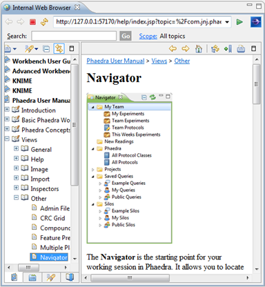

The Internal Web Browser View allows you to search for internet pages within the Phaedra Application. This could be useful when you would like to compare something with sources on the internet.
The Internal Web Browser has some buttons for actions, in order of appearance:
- Back: Go back to the previous page
- Forward: Go to the next page
- Stop: Stop the loading of the current page
- Refresh: Reload the current page
- The address bar: here you can enter the URL of the website
- Go to the entered URL
To open the Internal Web Browser, go to Window > Show View > Other > General > Internal Web Browser
Note: This browser can be used to drill down into the Phaedra Help Website.
